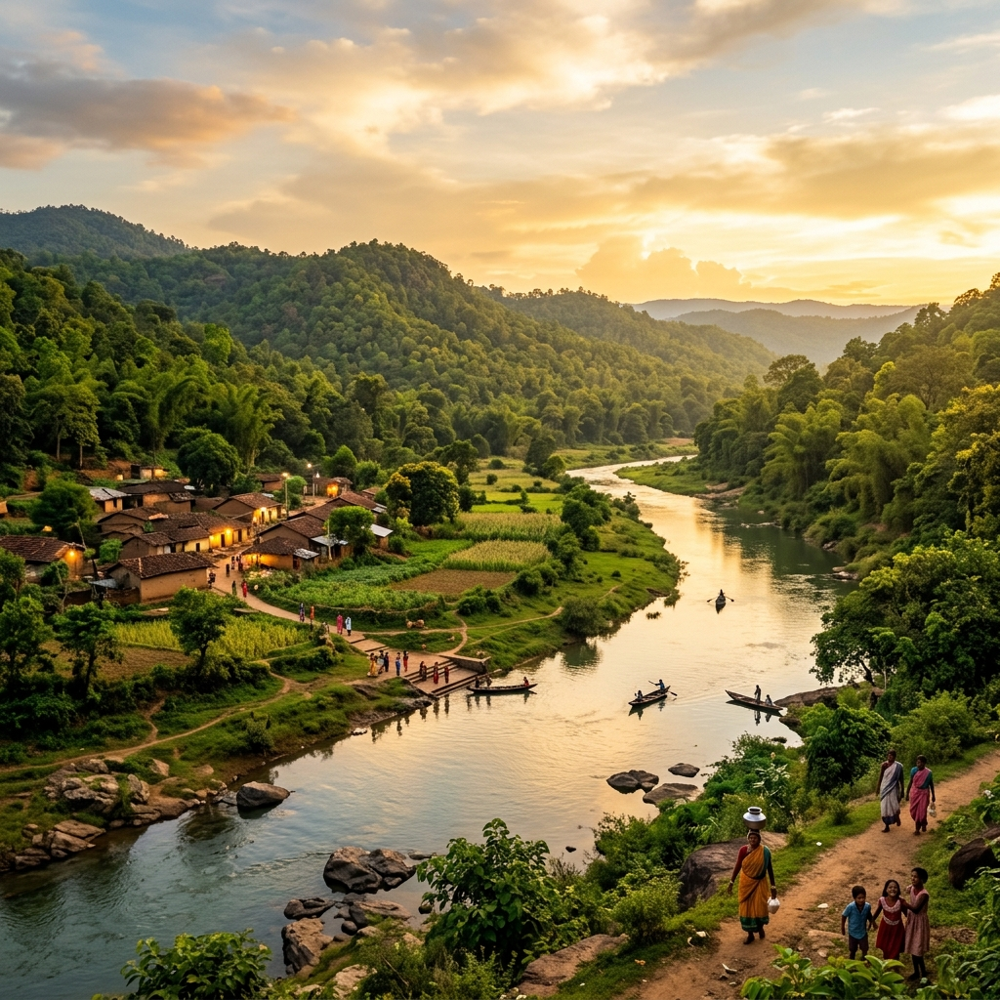
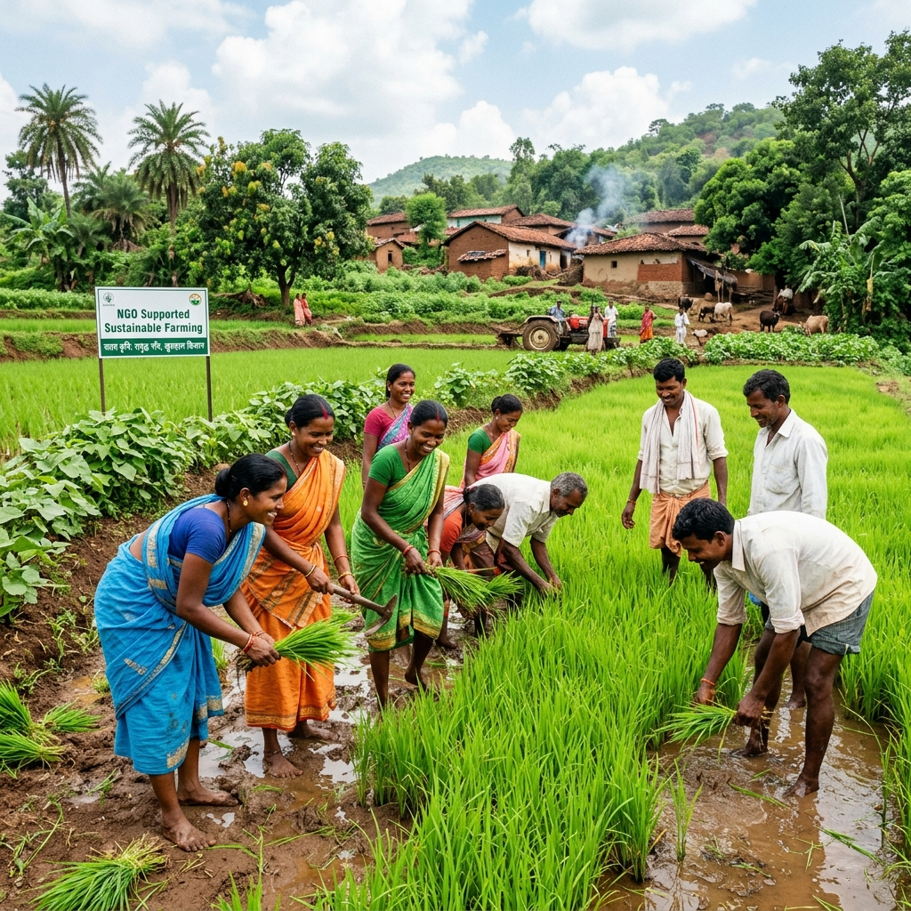
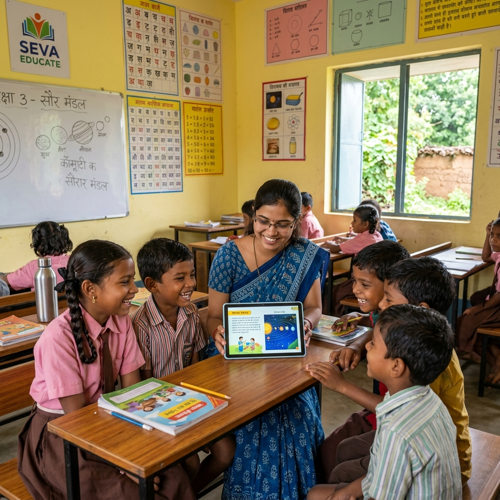
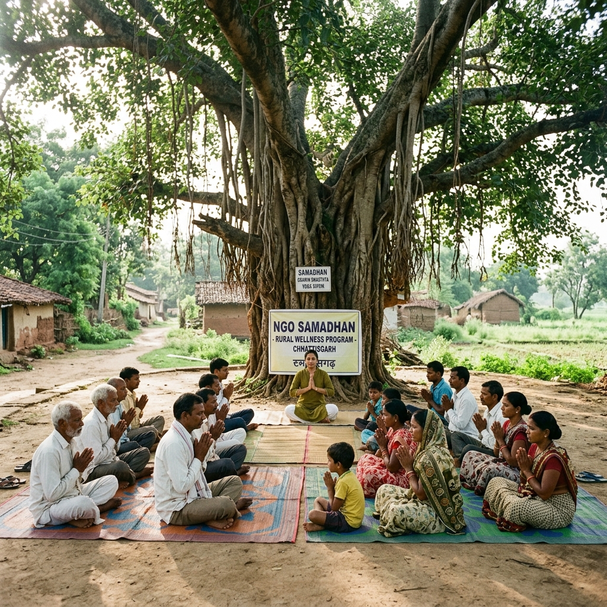
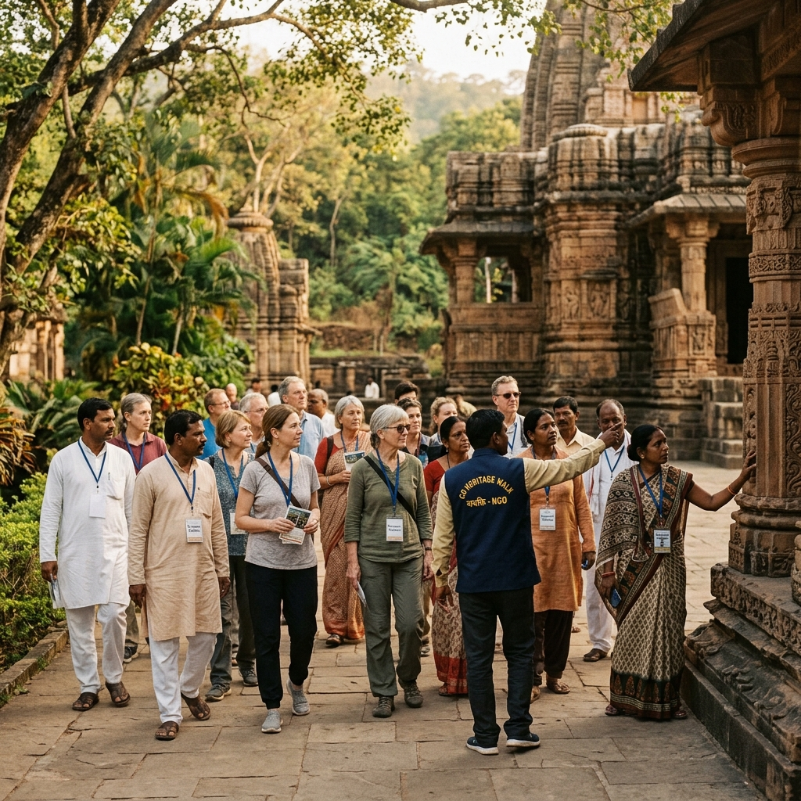

Transforming Lives
Strategic initiatives aligned with UN Sustainable Development Goals.

Bolti Nadi
“Speaking Rivers” is our flagship water conservation initiative. We focus on protecting water bodies from pollution, promoting watershed awareness, and implementing rejuvenation projects for the rivers of Chhattisgarh.
- Water quality testing and monitoring
- Riparian buffer zone restoration
- Community-led river cleaning drives

Farmours
Empowering farmers through sustainable agriculture. Farmours combines traditional wisdom with modern eco-friendly techniques to improve yields while preserving soil health.
1000+
Farmers Trained
Organic
Certification Support

Prayaas
Prayaas bridges the educational divide in rural Chhattisgarh. We provide support for high-quality education, access to digital tools, and scholarship programs for meritorious students from marginalized backgrounds.
Our learning centers focus on cognitive development and skill training beyond traditional textbooks.

Yoga Kutumb
Promoting a culture of holistic health. Yoga Kutumb organizes community-wide yoga sessions, health check-ups, and awareness programs on nutrition and traditional wellness practices.
We believe a healthy community is the foundation of a prosperous village.
Social Heritage Walk
Protecting Chhattisgarh's rich cultural legacy. Every World Heritage Day, we organize walks to raise awareness about local monuments, history, and the symbiotic relationship between culture and nature.
